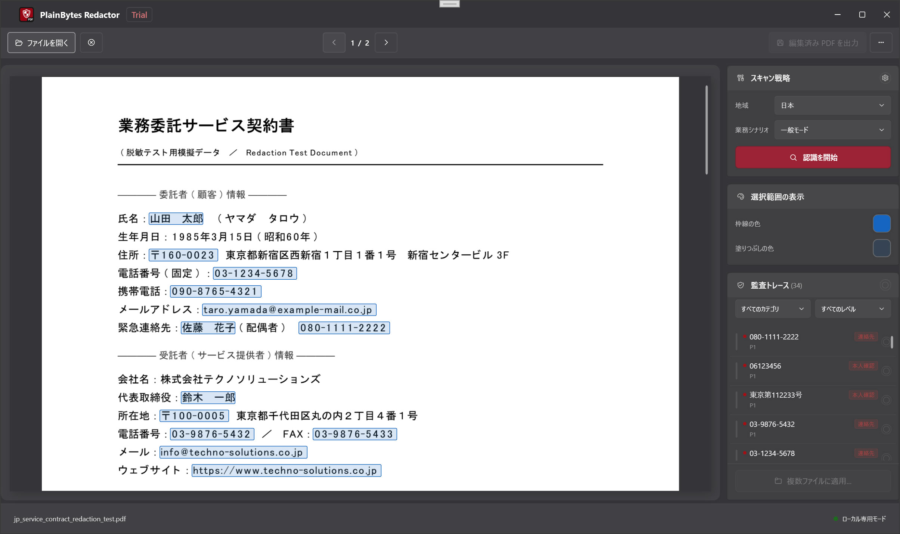

クイックスタート
以下の動画で、最初から最後までの一連の流れ（自動検出と必要に応じた手動での補足）を示します。
1このアプリでできること
1.1 本当の墨消しと、上から塗るだけのプレビュー
この2つは、コンプライアンスやセキュリティの観点では大きく意味が異なります。
| 観点 | 上から塗るだけのプレビュー（一般的な「黒塗り」） | 本当の墨消し（このアプリが目指す処理） |
|---|---|---|
| PDF内部 | テキスト、ベクター、画像がファイル内に残ったまま、別の図形で覆われているだけの場合があります。 | 一致した内容はコンテンツストリームから削除されるため、通常の解析では復元できません。 |
| コピー／検索 | ツールによっては、「隠した」はずのテキストをコピーできてしまうことがあります。 | 選択可能なテキストに機密文字列が残らない状態を目指します（エクスポート後のファイルで確認してください）。 |
| 適した用途 | 画面上で読むだけの場合や、一時的に隠したい場合。 | 外部共有、保管、監査、デューデリジェンスなど、内容を確実に消す必要がある場面。 |
1.2 「ローカル・オフライン」の意味
- 作業はこのPC内で完結: PDFを開く、ルール照合、墨消し済みファイルの書き出し、検証はすべてローカルで実行されます。
- 墨消しのために文書をアップロードしません: 墨消し処理の一部としてファイルをクラウドへ送る設計ではありません。
- ヘルプや更新とは別です: ヘルプ、更新確認などのメニューを開くと、Windows がブラウザーや Microsoft Store を起動する場合があります。これは墨消し処理をオフラインで行うこととは別の動作です。
1.3 向いている使い方
- 法務、金融、医療、公共部門、監査など、人の確認を入れたい場合や、漏えい時の影響範囲を小さくしたい業務。
- PDFを配布する必要がある一方で、ID、口座番号、連絡先などの個人や組織を特定できる情報を取り除きたい場合。
- 同じレイアウトのPDFが多数ある場合: 1つの「基準」ファイルで確認したあと、複数ファイルに適用を使って同じ位置情報をほかのファイルに再利用できます（§3のステップGと§9を参照）。
2基本の考え方
2.1 墨消しマーク (RedactionMark)
内部的には、墨消し候補の各範囲が墨消しマークとして扱われます。「ページ上の四角形にメタデータが付いたもの」と考えると分かりやすいです。
- ページと四角形: PDF座標上の位置とサイズ。
- 状態: 保留中と確認済み。エクスポート時に削除されるのは確認済みのマークだけです。
- ソース: ルール（パターン／正規表現）または手動選択。自動検出か、自分で描いたものかを区別できます。
- カテゴリとリスク: 監査リストでの絞り込み、並べ替え、一括操作に使われます。
2.2 「確認」の意味と、手動確認が必要な理由
- 自動処理を最終判断にしません: ルール照合では、普通のテキストを過剰に検出したり、本当に機密な箇所を見逃すことがあります。そのため、このアプリは「見つかったものは全部削除」とは決めつけません。
- 確認 = あなたが承認すること: 確認済みにしたマークはエクスポート対象に入ります。保留中のままのものは最終決定として扱われません。
- 実務のレビューに合います: この一手間により、二人確認、監査証跡、ワンクリックでページ全体を誤って消してしまう事故の回避に合わせやすくなります。
2.3 バッチ処理の基準
- 「名前付きテンプレートファイルとして保存し、あとで選ぶ」という流れはありません。バッチ処理で使うのは、メモリ上の幾何学的な基準です。複数ファイルに適用からバッチへ進むと、現在の文書上の確認済みマークが、そのバッチセッション内だけで使う正規化された四角形（ページ + ページサイズに対する相対座標）に変換されます。
- キューに入れた各PDFに対して、バッチエンジンはその四角形を配置するだけです。ファイルごとに文書全体のルール検出をやり直すことはありません。
- それで問題ないケース: 同じシステムから出力された、同じレイアウトで機密領域も同じ位置にある複数ファイル（例: 定型の明細）。レイアウトがずれるとボックスが違う場所にかかるため、最初の出力は抜き取り確認してください。
- ハブ内のルール: 現在の単一ファイル作業で候補を見つけるためのものです。キュー内の各ファイルに自動で再実行されるわけではありません。バッチ処理は、すでに確定した確認済みの位置を基準に動きます。
3一連の作業手順
例として使う場面
この例では、法務担当者が外部に提出する8ページの従業員退職手続きPDFを扱います。携帯電話番号、銀行カード番号の一部、個人メールアドレスを削除する必要があります。ファイルはテキスト選択できる電子PDFで、単なるスキャン画像ではありません。

ステップA: 文書を開く
開く、またはドラッグ＆ドロップでPDFを読み込みます（一般的な画像形式にも対応しています。アプリ内の導線は異なる場合があります）。
プレビュー、検出、マークはすべてこの1つの元ファイルに紐づきます。実際に墨消ししたい版を開いてください。
ステップB: ルールハブで地域とシナリオを選ぶ
ルールを開き、地域（国／地域）を選んでから、業務シナリオ（一般、金融など）を選びます。必要に応じて組み込みルールのオン／オフを切り替えたり、カスタムルールを追加したりできます。
有効なルールセットは地域とシナリオで変わります。合わないシナリオを選ぶと、有用なルールが無効になったり、余計な検出が増えたりします。閉じる前に設定を保存しておくと、次に似た文書を扱うときに早く進められます。
ステップC: 検出を実行する
右側のスキャンポリシーで 検出を開始（または同等の操作）をクリックし、文書モデルと全体スキャンが終わるまで待ちます。
ルールの検出結果が保留中マークの一覧になります。地域、シナリオ、ルールを変更した場合は、一覧を一致させるためにもう一度検出を実行してください。
ステップD: 監査リストで確認する
右側の監査証跡で、項目を1つずつ確認するかフィルターを使います。削除すべきものは確認済みにし、誤検出は確認を外すか行を削除します（具体的な操作はビルドによって異なります）。プレビュー上の黄色いオーバーレイは通常リストと同期し、クリックで確認状態を切り替えられることがあります。
この手順により、誤って消したり、消すべきものを残したりするリスクを下げます。エクスポートで反映されるのは確認済みマークだけです。
ステップE: 見落としにボックスを描く
左側のプレビューで、ルールが拾えなかったものの、墨消しが必要だと分かっている箇所に四角形をドラッグして描きます。背景が見づらい場合は、選択範囲の色を調整してください。
自動検出ですべてを拾えるわけではありません。手動ボックスは最後の保険です。
ステップF: エクスポートする
墨消し済みをエクスポートを選び、保存先を指定し、完了サマリー（削除された項目数、メタデータのクリーンアップ、検証メッセージ）を確認します。
共有できるコピーが作成されます。サマリーは簡易チェックとして使えます。警告が出た場合は、エクスポートしたPDFを開いて該当箇所を確認してください。
ステップG（任意）: 複数ファイルに適用する
このPDFで墨消しすべきものをすべて確認済みにしたら、複数ファイルに適用（または同等の項目）を使います。アプリは上記の正規化された基準を作成し、バッチ墨消しを開きます。同じレイアウトのPDFを追加し、出力フォルダーを設定し、メタデータを削除するか選んで実行します。
レイアウトが本当に一致していれば、ファイルごとに同じ確認作業を繰り返さずに済みます。バッチでも、ボックス内の領域は物理的に削除されます。
重要: これはディスク上の再利用可能な名前付きテンプレートではありません。別のテンプレートファイルはありません。基準は、確認済みにしたこの文書から作られます。また、バッチはキュー内の各ファイルに対してルール検出を再実行しません。ファイルのレイアウトが変わっている場合は、単一ファイルの手順に戻ってください。
4メイン画面の見方

4.1 プレビュー（左側）
- 用途: PDF（または画像）の各ページを表示し、ページ番号とレイアウトを元ファイルに合わせます。
- マーク: 自動または手動で追加した保留中の範囲がハイライト表示されます。範囲をクリックすると、リストと合わせて確認状態を切り替えられることがあります（黄色表示の挙動はビルドによって異なります）。
- 手動ボックス: プレビュー上でクリックしてドラッグすると、四角形のマークを追加できます。
4.2 スキャンポリシーパネル
- 用途: 検出実行（例: 検出を開始）の入口です。ハブで設定した地域、シナリオ、ルールセットと連動します。
- 分けている理由: 「文書全体をいつスキャンするか」と「監査リストをどう処理するか」を分けることで、混乱を減らします。
4.3 選択範囲の表示
- 用途: 手動選択の見た目（枠線、塗り、カスタム色）を調整し、見づらい背景でもボックスを見やすくします。
- 注意: これは見た目の補助だけです。墨消しされるかどうかは、確認とエクスポートに依存します。
4.4 監査証跡リスト
- 用途: 開いている文書の機密候補をまとめて表示します。カテゴリやリスクで絞り込み、行ごとまたは一括で確認／解除できます。
- プレビューとの同期: 行を選択または操作すると、通常は該当ページへスクロール／ハイライトします。プレビュー内のマークをクリックすると、リスト側の状態も更新されます。
4.5 ツールバー（上から順）
- 開く: ローカルPDFまたは対応画像を選びます。
- 文書を閉じる: 現在のファイルを閉じます。
- 前／次のページ: ツールバーから操作します。単一ファイルページでの
Page Up/Page Downは、プレビューのスクロール用として別扱いです（§7.3参照）。 - ルール: ルールハブを開きます。
- バッチ: バッチ墨消しを開きます。
- 墨消し済みをエクスポート: 確認済みマークがあるときに使用できます。
- その他（⋯）: 言語、ヘルプ、フィードバック、更新、バージョン情報など。
ステータスバーには、準備状況と現在のファイル名が表示されます。
5ルールハブ
5.1 地域と業務シナリオ
- 地域: 国／地域ごとの設定です。適用される組み込みパターン（ID形式、電話番号ルールなど）を決めます。
- 業務シナリオ: ルール群（一般、金融、医療、法務／行政など）を絞り込んだり重点づけたりして、文書の種類に合う初期設定にします。
- 組み合わせ: まず地域、次にシナリオを設定します。変更後は検出を再実行してください。古い結果を見ている可能性があります。
5.2 組み込みルールとカスタムルール
- 組み込み: アプリに同梱され、本人確認、金融、住所、連絡先などのグループに分かれています。ルールごとにオン／オフでき、ローカルデータで動作するため完全にオフラインです。
- カスタム: ラベルとパターンを自分で指定します。通常の部分文字列（大文字小文字を区別しない）または .NET 正規表現を使えます。組み込みルールが知らない社内コードなどに便利です。追加数には上限がある場合があります。
5.3 ルールを調整すべきとき
- ノイズが多すぎる: 範囲が広すぎるルールを一時的に無効にするか、より近いシナリオを選びます。
- 同じパターンが何度も出るのに組み込みルールが一致しない場合は、手動ボックスを減らすためにカスタムルールを追加します。
- 設定が崩れてきた: 既定値に戻すを使うとローカルの上書き設定を消せます（確認を求められます）。
6監査サイドバー
6.1 この確認方式を採る理由
- 1行には、複数ページにまたがる同じ種類または同じキーの機密候補がまとめられることがあります。確認するということは、それらすべてを削除してよいと判断することです。
- 保留中は「モデルの推測」と「人の判断」を分けます。レビューなしに一括で書き込まれることはありません。
- エクスポートエンジンが使うのは確認済みマークだけです。これは意図した設計です。
6.2 フィルターと一括確認
- フィルター: カテゴリやリスクで絞り込み、高リスク項目や特定の項目種別（例: 連絡先のみ）から確認できます。
- 一括: 現在のフィルターで表示されている項目すべての確認状態を切り替えます（表記はビルドにより異なります）。まとまった範囲が明らかに正しい、または明らかに誤りの場合に便利です。
- ヒント: 一括操作の前に有効なフィルターを確認し、意図しない行まで巻き込まないようにしてください。
6.3 リスクレベル
レベル（例: critical、high、suspicious、medium、low）は、リスクの高い候補を先に出すための並べ替えや絞り込みに役立ちます。これは確認を強制するものではありません。何を墨消しするかは引き続きあなたが判断します。
7手動選択
7.1 自分でボックスを描くべき場面
- ルールが見逃したが、削除すべきだと分かっているものがある場合。手書きの写真注釈、特殊なレイアウトの一角など。
- 検出結果が細切れだったりずれている場合。不要な自動行を削除し、より正確なボックスを描きます。
- 画像として扱われるスキャンのみの内容。テキストPDFとは挙動が異なるため、手動ボックスに頼ることが多くなります（FAQ参照）。
7.2 自動検出されたマークの扱い方
実務では、検出を実行 → 監査リストで明らかな誤検出を外し、傾向を見る → 本当に見逃された箇所に手動ボックスを追加 → プレビューをページごとにざっと確認、という順番が扱いやすいです。手動マークも自動マークも、エクスポート時には同じように扱われます。重要なのは確認済みかどうかです。
7.3 キーボードショートカット（プレビューとマーク）
単一ファイルページが読み込まれている間、メインウィンドウの PreviewKeyDown にフックされます。以下のショートカットは、文書が開いていてアプリが処理中でない場合にのみ有効です。ツールバーの前／次ページボタンには直接接続されていません。
| キー | 操作 |
|---|---|
Tab | 次の墨消しマークへ移動します。 |
Shift + Tab | 前の墨消しマークへ移動します。 |
← ↑ → ↓ | 修飾キーなしの場合: ←↑ は前のマーク、→↓ は次のマークへ移動します。いずれかの修飾キーを押している場合: ↑↓ のみがプレビューを一定量スクロールし、←→ はその分岐では処理されません。 |
Enter | 修飾キーなし: 選択中のマークの確認状態を切り替えます。 |
Delete | 修飾キーなし: 選択中のマークを削除します。 |
Page Up / Page Down | プレビューをおおよそ1画面分スクロールします。 |
Home / End | プレビューのスクロール位置を先頭／末尾へ移動します。 |
8エクスポート
8.1 エクスポート前チェックリスト
- これが公開・提出するつもりのファイルであること（ページ数、添付など）を確認済み。
- 墨消しすべきものはすべて確認済みで、残すべきものは確認解除またはリストから削除済み。
- スキャン部分や手動でボックスを描いた特殊な箇所を含め、重要なページをプレビューで目視確認済み。
- エクスポートは通常、元ファイルを上書きせず新しいファイル（または指定したパス）を書き出すことを理解している。動作は保存ダイアログに従います。
8.2 メタデータを削除する理由
PDFにはページ本文以外にも、作成者、生成アプリ、タイムスタンプ、XMPなどが含まれます。本文を墨消ししてもメタデータを残すと、内部アカウントや編集履歴が漏れる可能性があります。このアプリはエクスポート時にそれらを削除できます（バッチでも任意で可能です）。社外に出すファイルでは、UIに項目がある場合は通常、メタデータのクリーンアップをオンにしておくのが無難です。
8.3 サマリーの読み方
- 表示で確認した内容に対して、物理的に削除された項目数は妥当に見えますか？
- メタデータが削除されたと表示されていますか？
- テキスト検証の警告が出ている場合、自動サンプリングで気になる点が見つかっています。エクスポートしたPDFを開いて確認してください。サマリーだけを「残留ゼロ」の証明として扱わないでください。
9バッチ処理
9.1 バッチモードが実際に行うこと
基準を持った状態で 複数ファイルに適用 から入ると、キュー内の各PDFは配置のみの流れになります。正規化された四角形が各ページの絶対座標に変換され、マークが作られ、内容が物理的に削除され、必要に応じてメタデータも削除されます。ファイルごとにルール検出を再実行することはありません。
9.2 向いているケース
- 同じシステムから出力された、同じレイアウトで機密領域が同じ相対位置にある多数のPDF。
- 1つの代表ファイルで検出と確認を終えており、ほぼ同じコピーで同じ作業を繰り返したくない場合。
9.3 注意したい点
- 保存されるテンプレートファイルはありません: バッチウィンドウを閉じると、メモリ上の基準は破棄されます。次回は 複数ファイルに適用 から再度作成してください。
- その導線を使わずにツールバーからバッチを開くと、基準がない状態になる場合があります。その場合、開始が無効のままになることがあります。
- 小さなレイアウトずれでも、見逃しや誤った範囲につながることがあります。最初の出力は抜き取り確認してください。
- 社外共有では、項目が表示される場合は プロパティと隠しデータを消去 をオンにしてください。
- 文書タイプやライセンス階層によってはバッチ処理が制限される場合があります。複数ファイルに適用 がグレーアウトしている場合は、その合図です。
10よくある質問
10.1 誤検出が多いのはなぜですか？
ルール照合はヒューリスティックに頼っています。機密情報に見える文字列、地名と人名の衝突、表の断片などが原因になります。シナリオやルールを調整する、ノイズの多いルールをオフにする、リストで確認を外す、といった対応で多くは落ち着きます。手動確認は意図的な設計で、必要なものをワンクリックで消してしまう確率を下げます。
10.2 スキャンPDFはどう扱われますか？
PDFが実質的にページ画像で、実際のテキストレイヤーを持たない場合、ルール照合が利用できる情報は少なくなります。そのため、手動ボックスや、そのビルドが提供する画像向けの流れに頼ることが多くなります（画面上の案内に従ってください）。最初に、扱っているものが電子PDFなのかスキャンなのかを把握しておくと助かります。
10.3 画像は墨消しできますか？写真内の文字が認識されないのはなぜですか？
はい。一般的な画像形式は文書のように開けます。プレビューし、マークし、エクスポートする流れは同じです。インストーラーサイズと実行コストを抑えるため、このバージョンにはOCRは同梱されていません。写真内の文字は選択可能なテキストにならないため、ルールベースの検出はほとんど効きません。機密箇所はボックスを描いて墨消ししてください（マーク間の移動にはキーボードショートカットも使えます）。「認識してから照合」したい場合は、先に別の場所でOCRを行うか、テキストレイヤー付きPDFを用意してください。
10.4 エクスポート結果をざっと確認するには？
- 任意のPDFリーダーで、機密だったと分かっている文字列についてすべて選択／コピーや検索を試します。
- ヘッダー、フッター、脚注を目視で確認します。
- アプリのエクスポート検証サマリーを読みます。警告がある場合は、まず該当ページを確認してください。
- 非常に重要な案件では、別ツールでの確認、印刷レビューなど、組織で通常行っている確認手順も重ねてください。